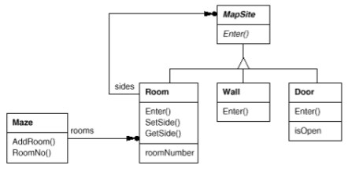

Plutôt que d'avoir un nombre fixe de comportements complexes, on cherche à avoir des comportements plus simples que l'on peut assembler pour fabriquer des comportements complexes.
La simple instanciation d'objets ne suffit plus.
Ils ont deux caractéristiques :
- Ils encapsulent la connaissance des classes concrètes utilisées par le système.
- Ils cachent la manière de créer et d'assembler les objets.
Donc le système ne connaît que les interfaces des objets.
Cela donne de la souplesse sur le quoi (qu'est-ce qui est créé), sur qui crée les objets, comment et quand ils sont crées.
Cela permet de configurer le système pour fabriquer des objets dont la structure et les fonctionnalités varie. Cette configuration peut être statique (à la compilation) ou dynamique (à l'exécution).
Patterns de création :
- Singleton (Singleton) : une seule instance.
- Factory method (Fabrique) : déléguer la création aux sous-classes.
- Abstract factory (Fabrique abstraite) : création de familles d'objets.
- Builder (Monteur) : création d'objets partageant le même processus de fabrication.
- Prototype (Prototype) : création d'objets par clonage.
Le labyrinthe
( = Maze en anglais)Suivant les cas, les patterns de création peuvent être complémentaires ou en concurrence.
Comme ils sont reliés, on va les étudier en utilisant un exemple commun.
Cet exemple est une adaptation java du livre du GOF, et utilise la terminologie originale en anglais.
Le code correspondant se trouve dans exemples/patterns/creation/src/maze.
Dans le cadre du développement d'un jeu, on a besoin de créer un labyrinthe.
Suivant le pattern étudié, les spécifications varieront un peu.
On va se concentrer sur la manière de créer le labyrinthe.
Le labyrinthe est constitué d'un ensemble de pièces (rooms).
Une pièce connaît ses voisins.
Les voisins possibles sont : une autre pièce, un mur (wall) ou une porte (door).  Chaque pièce peut avoir 4 directions (N S E W) contenues dans une enum.
MapSite est la classe abstraite commune pour tous les composants du labyrinthe.
Elle définit une seule opération :
enter() ; sa signification dépend du contexte :
- Si on entre dans une pièce, la position du joueur change.
- Si on entre dans un mur, la position du joueur ne change pas.
-
Si on entre dans une porte,
- Si la porte est ouverte, la position du joueur change.
- Si la porte est fermée, la position du joueur ne change pas.
Room est la sous-classe concrète de MapSite qui définit les relations entre les différents composants du labyrinthe.
Elle contient
- les références aux autres
MapSite.
- un room number (chaque room est identifiée par son room number).
On définit une dernière classe,
MazeGame, chargée de créer le maze.
L'exemple GOF fonctionne donc de la manière suivante :
- La fonction
main()crée un objetMazeGame. MazeGamea une fonctioncreateMaze()chargée de créer les composants du labyrinthe.
Implémentation java
exemples/patterns/creation/src/maze
maze/
├── Main.java
├── model
│ ├── bomb
│ │ ├── BombedWall.java
│ │ └── RoomWithBomb.java
│ ├── Direction.java
│ ├── Door.java
│ ├── enchanted
│ │ ├── DoorNeedingSpell.java
│ │ └── EnchantedRoom.java
│ ├── MapSite.java
│ ├── Maze.java
│ ├── Room.java
│ └── Wall.java
└── patterns
├── abstractfactory
│ ├── BombedMazeFactory.java
│ ├── EnchantedMazeFactory.java
│ ├── MazeFactory.java
│ └── MazeGame.java
├── basic
│ └── MazeGame.java
├── builder
│ ├── CountingMazeBuilder.java
│ ├── MazeBuilder.java
│ ├── MazeGame.java
│ └── StandardMazeBuilder.java
├── factorymethod
│ ├── BombedMazeGame.java
│ ├── EnchantedMazeGame.java
│ ├── MazeGame.java
│ └── parametrized
│ └── ParametrizedMazeGame.java
└── prototype
├── MazeGame.java
└── MazePrototypeFactory.java
Création basique
Danssrc/maze/Main.java :
MazeGame game = new MazeGame(); Maze maze = game.createMaze();La manière la plus simple de créer le labyrinthe est de faire une fonction qui crée ses composants et leurs connections :
package maze.patterns.basic;
import maze.model.*;
import static maze.model.Direction.*;
public class MazeGame{
public static Maze createMaze(){
Maze aMaze = new Maze();
Room r1 = new Room(1);
Room r2 = new Room(2);
Door theDoor = new Door(r1, r2);
aMaze.addRoom(r1);
aMaze.addRoom(r2);
r1.setSide(NORTH, new Wall());
r1.setSide(EAST, theDoor);
r1.setSide(SOUTH, new Wall());
r1.setSide(WEST, new Wall());
r2.setSide(NORTH, new Wall());
r2.setSide(EAST, new Wall());
r2.setSide(SOUTH, new Wall());
r2.setSide(WEST, theDoor);
return aMaze;
}
}
La fonction createMaze() est rigide, car elle code en dur à la fois les composants utilisés et leur layout.
Par exemple, si on veut réutiliser ce layout avec des composants différents : des
DoorNeedingSpell, une porte qui a besoin d'un mot de passe pour être ouverte et des EnchantedRooms, pièces qui possèdent des mots de passe pour ouvrir les DoorNeedingSpell ?
Il faudrait remplacer
Room r1 = new Room(1);
Room r2 = new Room(2);
Door theDoor = new Door(r1, r2);
par
Room r1 = new EnchantedRoom(1);
Room r2 = new EnchantedRoom(2);
Door theDoor = new DoorNeedingSpell(r1, r2);
On pourrait réimplémenter createMaze() avec des if, mais on aura une fonction compilquée ; ou alors sous-classer MazeGame, mais une grosse partie du code est commune.
La difficulté vient du fait que le code qui utilise les classes
Room et Door instancie lui-même ces classes.
Les patterns de création permettent de séparer le code utilisateur de l'instanciation.